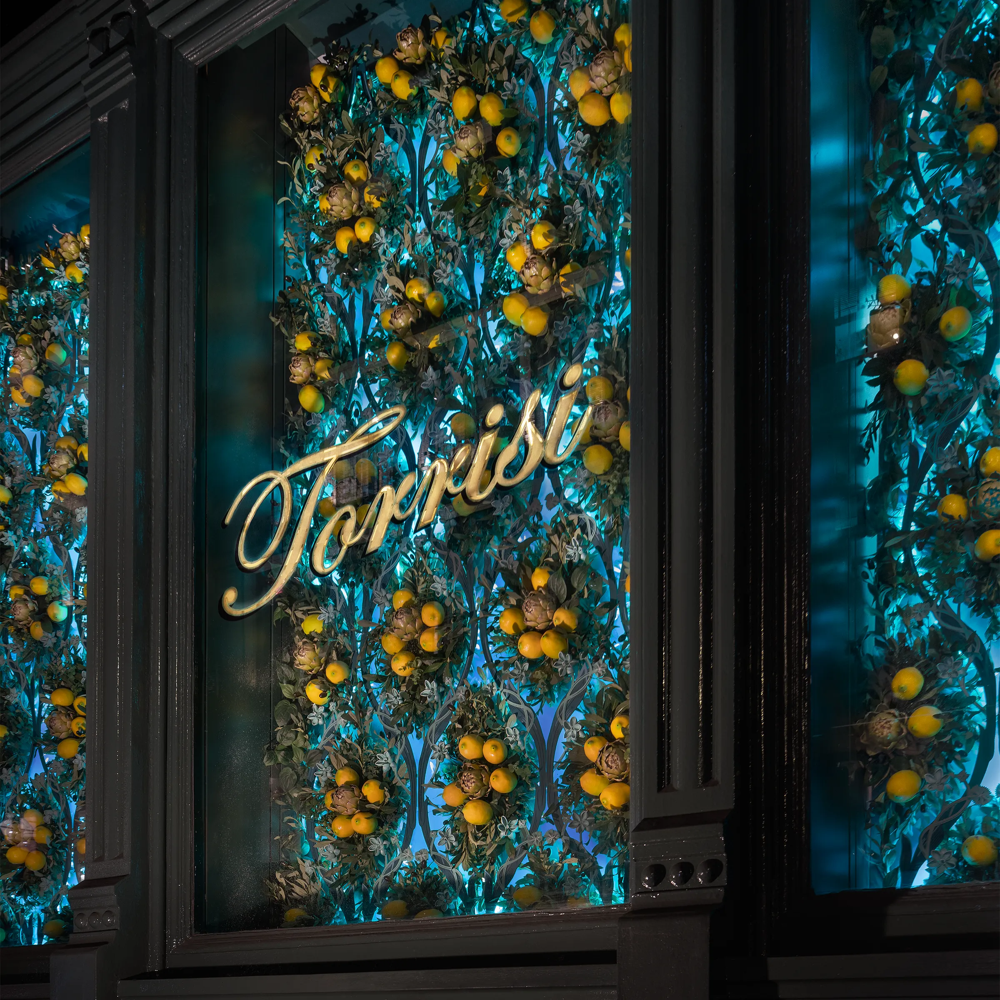
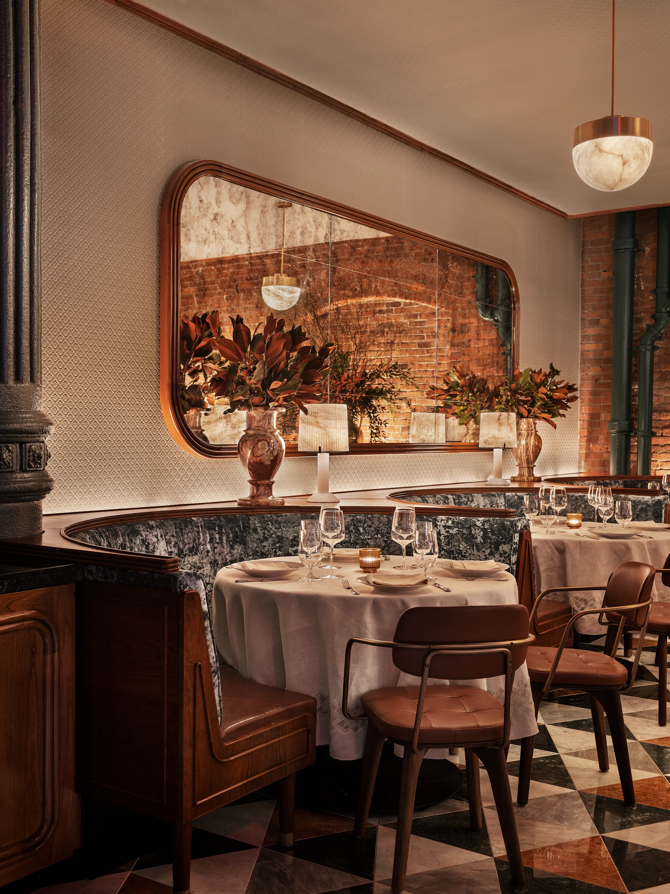

Behind the bar, a giant mirrored panel lists the cocktail highlights, Milanese style, while teal leather stools in front match the paint hue used throughout to complement the dark wood and brick. In the dining area, a patchwork of colored marble triangles covers the floor— another nod to northern Italian design—and the ceiling is lowered slightly to improve acoustics. Golden pendant lights with glowing stone diffusers hover over diners, and additional table lamps are placed atop the backs of arced banquettes along the walls.
Standing proudly against the restaurant’s stark white tablecloths, the Utility Armchair U by Shanghai studio and Stellar Works creative advisors Neri&Hu cuts a softly angled silhouette. A perfect balance of elegant and industrial—just like Torrisi—its steel hairline frame in aged gold wraps around the backrest as a double line, linking with the natural walnut base and also forming slender arms. The cushioned seat and back are customized in the client’s own leather, which echoes the russet tones of the restaurant’s brickwork and marble, and is tufted on the seat for added visual intrigue. Torrisi’s blend of Italian glamour and New York City grit so seamlessly is undoubtedly part of the appeal for its guests, who evidently enjoy feeling sophisticated and at ease in tandem.
We’ve put our names down on the waitlist and are eagerly awaiting our next visit. Hopefully some time this year?
Interiors by Garrett Singer Architecture + Design accentuate the industrial bones of the 19th-century structure, which includes exposed red-brick walls and vaulted ceilings, and monumental cast-iron columns. The high ceilings and open-plan dining area create a lofty atmosphere, and make the space feel lively and abuzz with conversation, while dimmed lighting sets a chic and sophisticated mood. The open kitchen adds to the vibrance of the dining experience.
